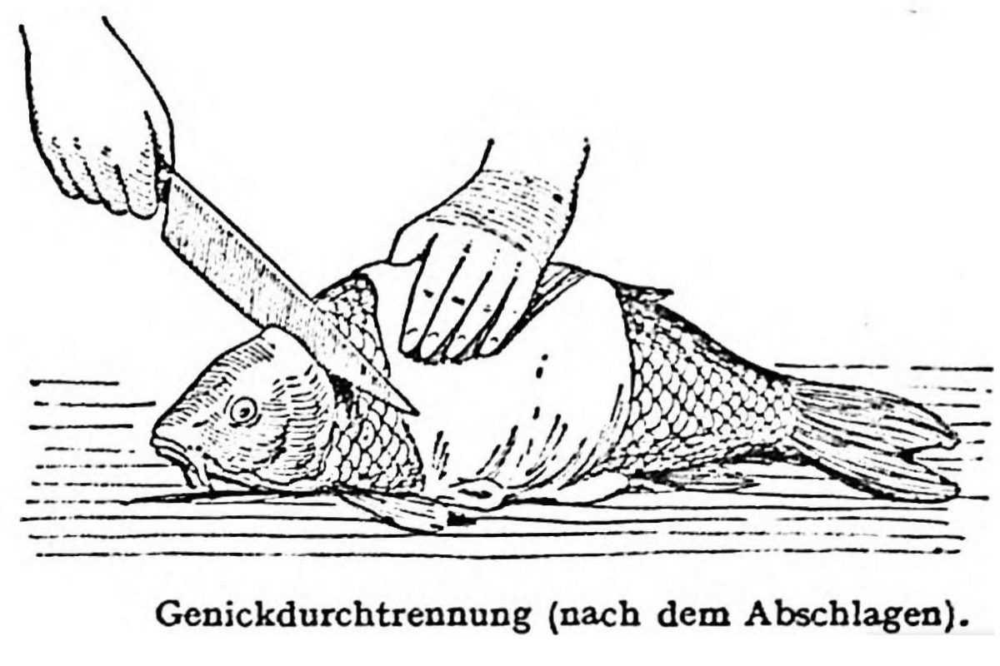

Polnischer Karpfen

Beschreibung
Carpe à la polonaise. (1½ Stunden, 1 Port. = 260 [81] Kal. = 390 Nem.)
Zutaten
- Karpfen 2 kg
- Fischsud:
- Wasser 4l
- Essig ⅛ bis ¼ l
- Gewürznelken 2
- Lorbeerblätter 2
- Pfefferkörner 10
- Neugewürzkörner 5
- Zitronenschalen
- Gelbe Rübe 1 (12 bis 15 dkg)
- Petersilienwurzel 1 (12 bis 15 dkg)
- Selleriewurzel (Zeller) ½ (5 dkg)
- Zwiebeln 4 dkg
- Salz
- Soß:
- Butter 5 dkg
- Mehl 2 dkg
- Fischsud
- Lebkuchen, unglasiert, 15 dkg
- Sirup ⅛
- Salz
Zubereitung
- Der Karpfen wird entschuppt, ausgenommen, gewaschen, in schmale Stücke geschnitten und nach Hinzufügung von Wurzelwerk und Gewürz in gesäuertem Salzwasser weichgekocht.
- Eine dunkle Einmach aus Butter und Mehl wird mit dem geseihten Fischsud aufgegossen.
- Diese Soß wird mit geriebenem, dunklem, unglasiertem Lebkuchen, Sirup und ein wenig Salz vermischt, dicklich eingekocht und über den gekochten Fisch gegossen.
Ein Teil des Essigs kann durch Rotwein ersetzt werden.
Beigabe: Knödel
Aus: Olga Hess u. Adolf Hess: Wiener Küche (Wien: Deuticke, 1950)